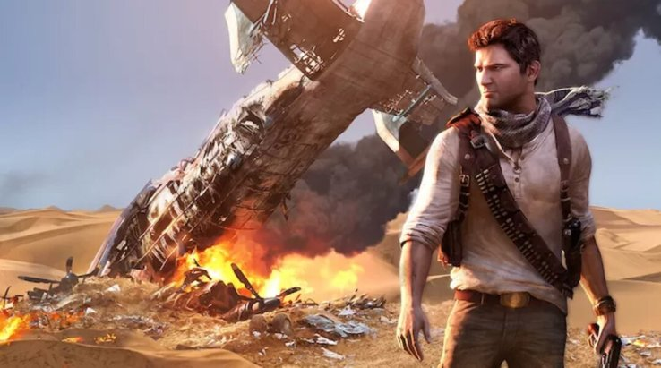

Após mais uma geração vitoriosa, a Sony ainda tinha fome de sucesso. Com o PlayStation 2 ainda em alta no Brasil, o PlayStation 3 foi anunciado na E3 de 2005. O terceiro console da Sony marcou a sétima geração e continuou a soberania estabelecida por seus antecessores, porém houveram problemas no caminho.
Muitos problemas
O PlayStation 3 já encarou dificuldades em seu anúncio. A apresentação na E3 2005 ficou marcada de uma maneira negativa para o console. Quando revelado, o PS3 apresentava junto consigo o seu controle de design completamente diferente dos anteriores, semelhante a um bumerangue. Além de ser estranho, o controle não parecia nem um pouco confortável, o que fez com que os fãs não aprovassem a ideia. Algumas outras gafes e problemas também marcaram a apresentação, tornando o anúncio do PS3 algo que, com certeza, a Sony não gosta de lembrar.
Preço alto e luz amarela
Na E3 de 2006, o PlayStation 3 voltou a desagradar os fãs, mas por outro motivo. O preço inicial de US$ 600 era muito acima do padrão da época, sendo assim um console tão caro não era esperado pelos jogadores.
Com o Nintendo Wii lançado por US$ 250 e o Xbox 360 sendo oferecido por US$ 400, o PlayStation 3 era por muito o console mais caro do mercado. O preço do PS3 poderia ser explicado com o fato do console ser extremamente potente, além de contar com outros recursos como a tecnologia Blu-ray. Kaz Hirai, na época diretor executivo da Sony, inclusive afirmou que a Sony pretendia conseguir lucros com a venda de seu novo console apenas a partir de 2009.
Além do preço, outro problema que marcou a história do console foi a chamada "luz amarela da morte", que atrapalhou a vida de donos do "PS3 Fat", o primeiro modelo do console. Apesar da Sony nunca confirmar que houveram problemas de fabricação no console, muitos jogadores relataram que, ao rodar jogos que exigiam mais do processamento, o PS3 Fat apresentava problemas e desligava sozinho.
A queda da PSN
A sétima geração de consoles também fez com que os jogadores se ligassem ainda mais aos títulos multiplayer online. Se o recurso já existia antes de maneira mais limitada, na sétima geração se tornou algo muito importante para diversos jogadores.
Em 2011, o PlayStation 3 encarou mais um de seus maiores problemas quando a PSN protagonizou uma das maiores polêmicas da Sony em todas as gerações. No dia 17 de abril de 2011, a PlayStation Network foi alvo de um poderoso ataque hacker que causou um gigantesco problema para a criadora do PlayStation.
Com a invasão sendo detectada apenas no dia 22 de abril, diversas informações importantes de milhões de jogadores já haviam sido roubadas, Nomes, endereços, login, senhas... para piorar a situação da Sony, os jogadores que já haviam efetuado compras na PS Store também tiveram os dados de seus cartões de crédito vazados.
Com 77 milhões de jogadores afetados e US$ 24 bilhões em prejuízo para a Sony, o ataque hacker ficou marcado como uma das maiores polêmicas, e fracassos, da história do PlayStation. A PSN permaneceu fora do ar durante um mês, atrapalhando inclusive o lançamento de Mortal Kombat 9.
Problemas com jogos
Devido a arquitetura do processador "CELL", o PlayStation 3 também enfrentou dificuldades no desenvolvimento de jogos durante a sétima geração de consoles. As desenvolvedoras afirmavam que era difícil programar para o console, o que ficou evidente quando títulos surgiram com bugs e outros problemas.
Piorando a situação do PS3, muitos destes jogos apresentavam um resultado melhor no Xbox 360, o principal rival da Sony na geração. Bayonetta e Skyrim são exemplos de jogos que tiveram um desempenho melhor no console da Microsoft.
As qualidades do PS3
Apesar do seu processador ter sido um problema para algumas desenvolvedoras, podemos dizer que a Sony investiu fortemente no "CELL" para tornar seu console extremamente poderoso. Com US$ 1 bilhão investido no desenvolvimento do processador, estava claro que a empresa desejava fazer com que o PS3 fosse um grande salto de qualidade.
Com 256 MB de memória RAM e 256 MB dedicados à sua placa de vídeo, o console tinha tudo para permitir que gráficos de tirar o fôlego fossem entregues aos jogadores.
Um fato interessante é que em 2010 o Departamento de Defesa dos EUA comprou diversas unidades do PlayStation 3 e as conectou criando um supercomputador, o que deixou evidente que o investimento da Sony havia obtido um ótimo resultado.
A estratégia da Sony
Os problemas do PlayStation 3 trouxeram prejuízo para a Sony. Com ports de jogos problemáticos, o preço alto do console e outras dores de cabeça que surgiram no caminho, o console obrigou a empresa a pensar em alguma maneira para reverter a situação.
Para dar a volta por cima, a criadora do PlayStation, mesmo com prejuízo, resolveu investir ainda mais em seu console, porém dando atenção aos maiores problemas com a intenção de corrigi-los.
Além de investir fortemente em jogos exclusivos, o que fez com que muitos títulos de sucesso fossem lançados, a Sony também utilizou seu dinheiro para melhorar seus kits de desenvolvimento, melhorando os ports de jogos para o PS3. Para resolver o problema do preço, a Sony removeu a retrocompatibilidade por hardware com o PS2, causando algum descontentamento, mas tornando o console muito mais acessível.
 A franquia Uncharted é uma das grandes exclusividades do PS3.
Playstation Plus
Sendo hoje em dia obrigatória para aqueles que desejam aproveitar o multiplayer online de títulos pagos, a PlayStation Plus foi lançada no PS3 de uma maneira diferente.
Na época, para conferir os títulos online ainda não era exigida a assinatura da PS Plus, porém muitos jogadores já eram assinantes do serviço devido aos jogos que eram oferecidos pela Sony. Oferecendo descontos e títulos mensais, a PS Plus foi uma novidade interessante, que na época era melhor aceita por não ser um conteúdo obrigatório como é hoje em dia, levando em conta que ficar de fora dos jogos online não é uma opção para diversos jogadores.
Os grandes jogos e exclusivos
Com o grande investimento em jogos exclusivos, o PlayStation 3 ficou marcado como a casa de grandes títulos de extremo sucesso. Se o console encontrou problemas em seu caminho, os exclusivos foram um dos pontos mais positivos para a Sony na geração e certamente ajudaram o PS3 a passar por cima de todos os seus problemas.
Entregando novos lançamentos de franquias que já haviam se consagrado nas gerações anteriores, o PlayStation 3 apresentou jogos de séries famosas como God of War e Gran Turismo. O terceiro jogo da jornada de Kratos foi bem recebido pela crítica e pelos jogadores, tornando-se um sucesso do console. Além disso, no PS3 a franquia ainda recebeu God of War Ascension.
Além dos títulos de franquias já consagradas, o PS3 também foi o lar de novas IPs que conquistaram seu espaço na indústria. Uncharted, um dos maiores exclusivos da Sony, fez sua estreia na sétima geração de consoles, ganhando 3 lançamentos ao longo dos anos. Em 2013, no final da geração, The Last of Us, o espetacular sucesso da Naughty Dog, chegou para tornar-se um dos maiores exclusivos do PlayStation 3 e deixar seu nome marcado na história do console.
O PlayStation 3 ainda teve diversos outros exclusivos importantes como Metal Gear Solid 4: Guns of the Patriots, Journey, InFamous, Heavy Rain e mais.
Além dos exclusivos, o PlayStation 3 também recebeu muitos títulos que marcaram a indústria, como é o caso de GTA V, o enorme sucesso da Rockstar que foi considerado por muitos um dos melhores jogos da geração. Batman Arkham Asylum, Call of Duty: Modern Warfare e Red Dead Redemption são outros exemplos de grandes títulos que chegaram ao terceiro console da Sony.
Os jogos mais vendidos do Playstation 3
Com GTA 5 liderando a lista de títulos mais vendidos, os exclusivos de PS3 também brilharam e permaneceram no topo. Além de The Last of Us e Uncharted, franquias que estrearam na sétima geração, aparecerem entre os primeiros colocados, Gran Turismo novamente provou sua força e garantiu a segunda colocação na lista. Confira o top 10.